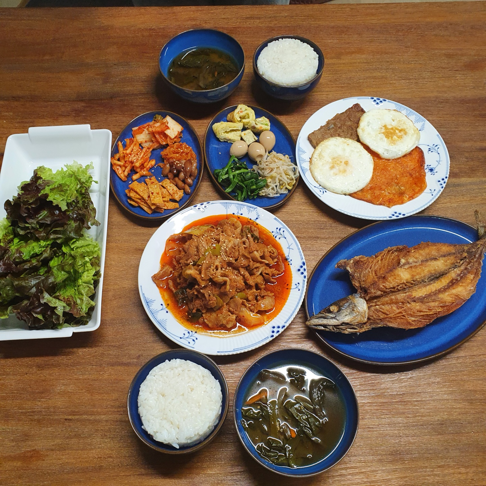

Normal Korean Meal
Steamed White Korean Rice
Spinach Soy Bean Paste Soup
Stir-fried Spicy Pork
Baked Pacific Saury
Fresh Vegetables for Spicy Pork
Side Dish (Kimchi, Stir-fried boiled fish cake, Rolled egg,
Seasoned Bean Sprouts, Seasoned Spinach, Soy Sauce Braised Beef
Stir-fried Peanuts, Stir-fried Spicy Squid, Julienne Korean Radish Salad)